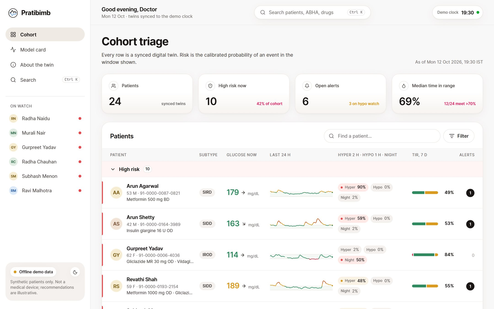
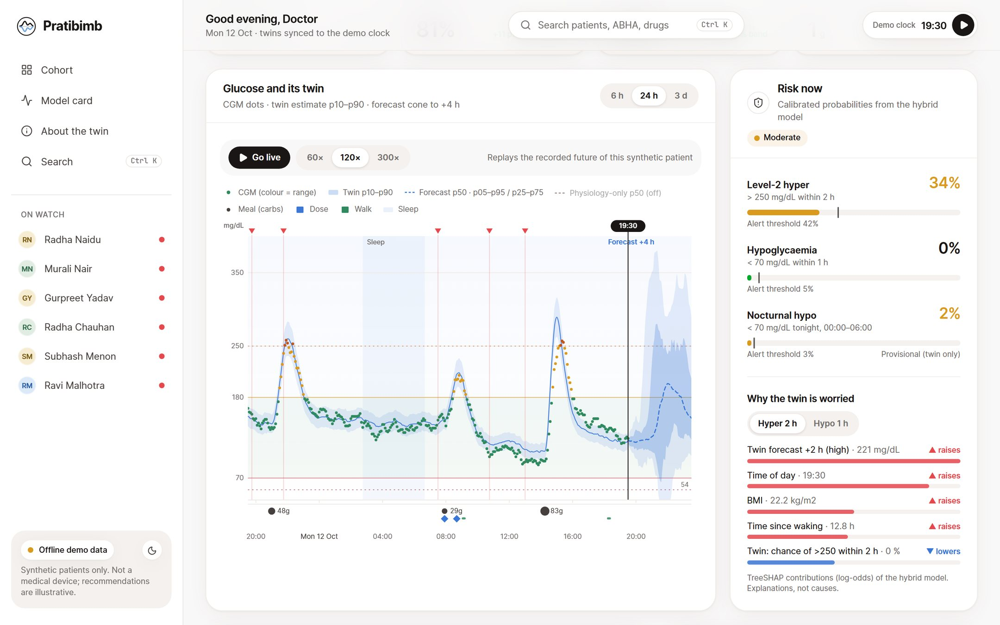
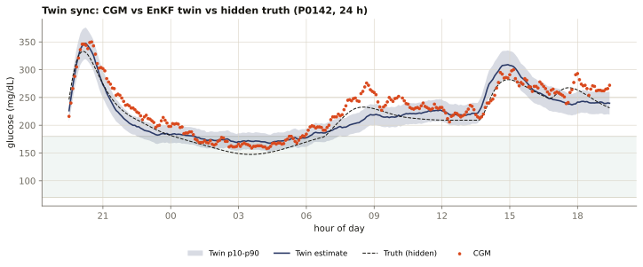
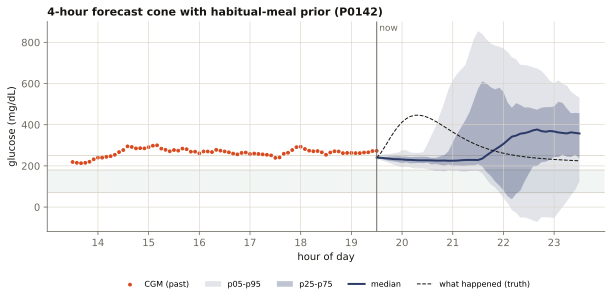
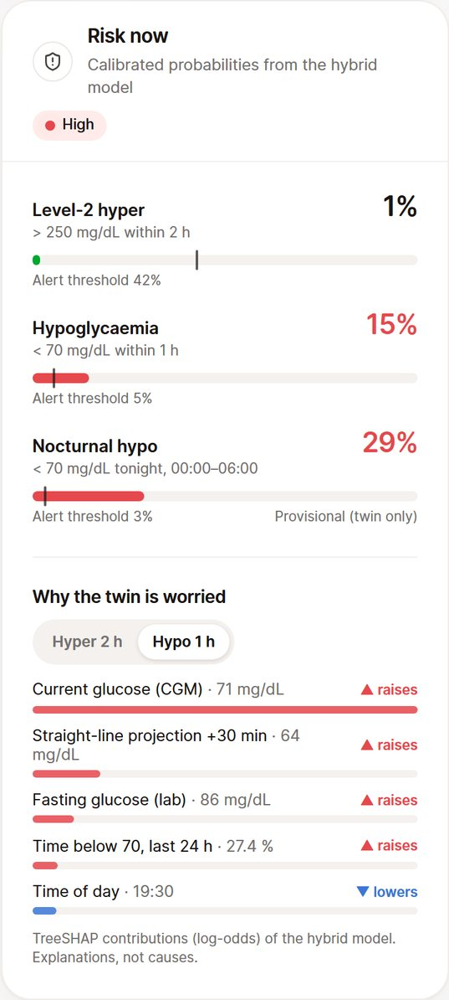
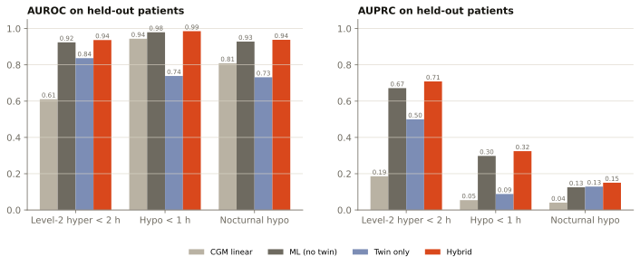
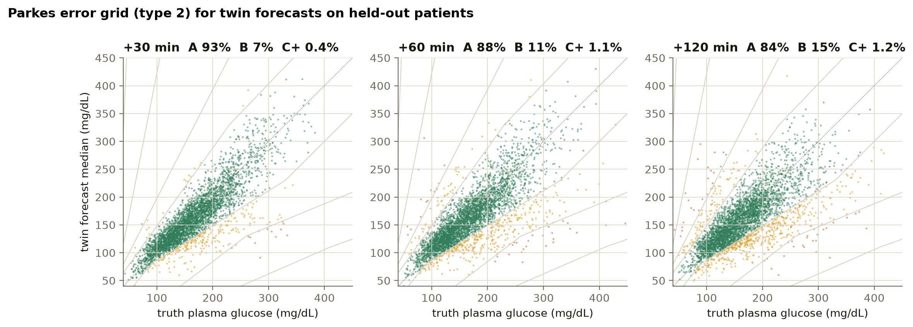
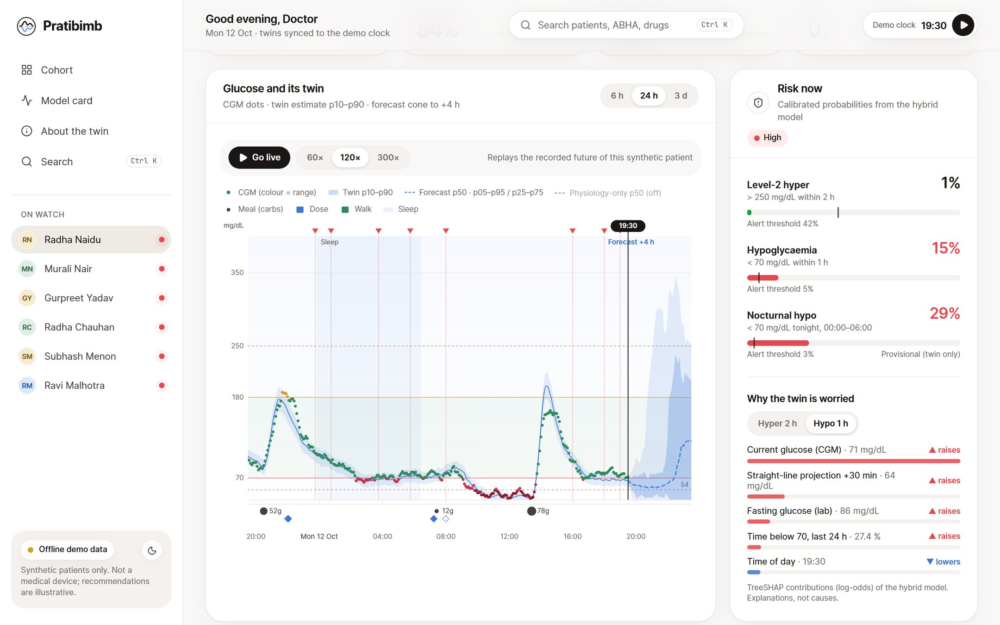

7 / 22
A hybrid physiology + machine-learning twin, personalised from the health record, kept in sync with every CGM reading, and able to answer “what if?” before the patient tries it.

Final-year BCA
Birla Institute of Technology (BIT Mesra), Off Campus Jaipur
Off Campus Jaipur, Rajasthan, India
Programme: Bachelor of Computer Applications (BCA), final year
Happiest Health Digital Twin Challenge 2026 (Unstop)
Type 2 Diabetes, designed for India
Twin engine + risk models, FastAPI, clinician console, evaluation
Apache-2.0 · trained on synthetic data; validated on open real data
~101 M adults in India live with diabetes
~136 M more have prediabetes
have hypertension
have abdominal obesity
ICMR-INDIAB-17 national survey: Anjana RM et al., Lancet Diabetes & Endocrinology 2023.
Glucose moves every few minutes; clinic labs arrive every few months. Wearables and CGM fill the gap, but nobody can watch the stream.
Asian Indian T2D splits into SIDD, SIRD, MARD and IROD subgroups, plus the “thin-fat” phenotype2. One model does not fit all.
Carbohydrate-heavy meals, evening chai and snacks, late dinners, festival sweets: the spikes follow the Indian day.
Sulfonylureas are widely prescribed. On a fasting day (Navratri, Ekadashi, Ramadan) a missed meal plus an SU dose is a classic hypoglycaemia trap.
2 INSPIRED cohort: Anjana RM et al., BMJ Open Diabetes Research & Care 2020.
The cohort view ranks every synced twin by calibrated risk: level-2 hyperglycaemia within 2 h, hypoglycaemia within 1 h, nocturnal hypo tonight.
Open the virtual patient: CGM against the twin, a 4-hour forecast cone, and the reasons behind each risk (“time since sulfonylurea dose”).
Test advice on this patient’s twin first: millet roti instead of rice, a walk after dinner, a skipped or shifted glimepiride dose, a short night.
“Predict a sudden glucose spike 2 hours in advance” is our hyper_2h task. We add hypoglycaemia within 1 h and nocturnal hypoglycaemia tonight, because lows are what make sulfonylurea and insulin therapy dangerous.
The EHR (FHIR R4 with an ABHA-style ID) sets the twin’s priors: HbA1c and fasting glucose for baseline levels, the TyG index for insulin resistance, diabetes duration for β-cell reserve.
CGM every 5 minutes, heart rate, HRV, steps and sleep stages stream in with logged Indian meals and doses.
A 64-member Ensemble Kalman Filter keeps a glucose–insulin model in sync, re-estimating insulin sensitivity, β-cell response and liver glucose output.
The synced twin forecasts 4 hours ahead; a LightGBM layer turns it into calibrated, explained alerts and the What-If Lab tests advice.

The virtual patient in the clinician console: CGM dots, twin band (p10–p90), forecast cone to +4 h, calibrated risk with TreeSHAP reasons.
An extended Bergman minimal model with gut absorption, exercise, sleep, stress, dawn effect and five Indian-common drug classes, personalised from the EHR.
An Ensemble Kalman Filter updates hidden physiology from each CGM reading: insulin sensitivity, β-cell response, liver glucose output, meal absorption speed, dawn effect.
The same synced ensemble simulates alternatives (meals, walks, doses, sleep) and returns baseline-vs-scenario bands, peaks, time above 180 / below 70 and hypo probability.
| Risk classifier | Pratibimb | |
|---|---|---|
| Personalised physiology (SI, β, EGP) | no | yes, with uncertainty |
| Forecast with a calibrated cone | no | p05–p95 to +4 h |
| What-if on this patient | no | meals · walk · dose · sleep |
| Reasons a clinician can read | sometimes | TreeSHAP + twin state |
Test patients come from a richer truth simulator than the twin: drifting insulin sensitivity, illness, stress, unlogged snacks, CGM lag, drift and dropouts. The twin never sees true glucose or the subtype label.
Demographics, 2 years of labs (HbA1c, FPG, lipids, creatinine/eGFR, ALT, UACR, C-peptide for ~35 %), comorbidities, medications, synthetic genetic markers (TCF7L2 rs7903146, PRS percentile).
FHIR R4 Bundle per patient: Patient with ABHA-format ID (91-0000-…, obviously synthetic), Condition (SNOMED CT), Observation (LOINC), MedicationStatement, Device.
CGM every 5 min with lag, calibration drift, AR(2) noise, compression lows and dropouts; heart rate, HRV (RMSSD), steps, sleep stages; logged meals and doses with realistic logging errors.
EHR · FHIR sheet in the console: summary, labs, medications, genetics and the raw FHIR R4 Bundle.
| SI insulin sensitivity | TyG index, waist/height, BMI |
| β β-cell response | duration, HbA1c, C-peptide, TCF7L2 |
| EGP liver output | fasting glucose + ADAG eAG |
| SG, meal rate, dawn | population priors |
TyG = ln(TG [mg/dL] × FPG [mg/dL] / 2)
eAG (mg/dL) = 28.7 × HbA1c − 46.7
The twin never reads the subtype label; the console shows an inferred subtype from twin posteriors + EHR. Full parameter table: docs/MODEL_CARD.md.

Honest note: the filtered twin is slightly less accurate than raw CGM against truth (9.38 % vs 8.51 % MARD) because the EnKF cannot remove correlated sensor drift. Its value is in forecasting and in the features it feeds the risk models.

Level-2 hyperglycaemia (>250 mg/dL for ≥15 min) begins within the next 120 min
Hypoglycaemia (<70 mg/dL for ≥15 min) begins within the next 60 min
Any hypo between 00:00 and 06:00 tonight, predicted at bedtime
Labels come from hidden truth plasma glucose, never from CGM artefacts; a CGM-labelled variant is reported too.
| hyper_2h | Twin: chance of >250 within 2 h · Time of day · Twin forecast +2 h (high) |
| hypo_1h | Current glucose (CGM) · Twin: forecast low in next 2 h · Time since sulfonylurea dose |
| nocturnal | Twin: expected overnight mean · Basal insulin action · Time since sulfonylurea dose |

Radha Naidu (synthetic, P0098)
| Task (held-out test) | Prevalence | AUROC (95 % CI) | AUPRC (95 % CI) | Sensitivity | Precision | Alerts / pt-day | Median lead |
|---|---|---|---|---|---|---|---|
| hyper_2h | 0.1337 | 0.93680.925–0.948 | 0.70870.641–0.765 | 0.6334 | 0.4686 | 2.0526 | 80 min |
| hypo_1h | 0.0052 | 0.98550.977–0.993 | 0.32440.176–0.399 | 0.425 | 0.0794 | 0.6625 | 35 min |
| nocturnal_hypo | 0.0085 | 0.93790.903–0.983 | 0.15040.054–0.232 | 0.875 | 0.0593 | 0.1261 | 185 min |

Hybrid beats ML-without-twin on every task: hyper_2h AUROC 0.924 → 0.9368, AUPRC 0.6717 → 0.7087; hypo_1h AUPRC 0.298 → 0.3244.
Operating points chosen on validation patients (≤ 1 false alert per patient-day). Sensitivity is per event; nocturnal rests on 8 positive test nights, so its CI is wide.
| Horizon | Twin RMSE (mg/dL) | MARD (%) | 80 % interval coverage | Parkes zone A (%) | Linear-extrapolation RMSE | Persistence RMSE |
|---|---|---|---|---|---|---|
| 30 min | 29.76 | 11.89 | 0.8111 | 92.95 | 41.89 | 36.25 |
| 60 min | 37.81 | 14.58 | 0.8151 | 88.14 | 76.51 | 49.52 |
| 120 min | 40.47 | 16.7 | 0.8178 | 84.31 | 140.56 | 60.27 |

Raw ensemble intervals were too narrow (coverage 0.36–0.43); widening by validation-fitted factors 3.103 / 2.991 / 2.783 gives the coverage shown.
people · 45 records · 490 days · CC BY-NC-SA 4.0
Healthy, prediabetes and T2D. 5-min Dexcom G6, Fitbit heart rate and METs, photo-logged meal macros. No medication records.
people · 45 records · 561 days · CC BY 4.0
T2D, non-insulin records only. 15-min Libre, text meal records, oral agents mapped to Pratibimb drugs (glinide → short-acting SU; acarbose → slower absorption).
RMSE (mg/dL) at +30 / 60 / 120 min, 89,977 timestamps
Real data enter only as an external check. GlycoTwin's harmonised store of two open, de-identified datasets is read once; derived records stay in a git-ignored folder (CGMacros is CC BY-NC-SA 4.0) and only aggregate metrics are published. Twin Parkes zone A: 88.78 / 84.6 / 80.25 %.
| Horizon | Twin | Persistence | Linear | GlycoTwin LightGBM | Twin MARD % | Twin 80 % cov. | Twin Parkes A % |
|---|---|---|---|---|---|---|---|
| 30 min | 27.3 | 18.52 | 23.23 | 14.06 | 13.6 | 0.7818 | 88.78 |
| 60 min | 30.84 | 28.83 | 45.96 | 21.7 | 15.39 | 0.7636 | 84.6 |
| 120 min | 34.51 | 40.6 | 90.61 | 27.87 | 17.22 | 0.7586 | 80.25 |
| Event | Base rate | Windows | Baseline | + twin features | Synthetic model, no retraining |
|---|---|---|---|---|---|
| ≥180 mg/dL within 2 h | 0.1304 | 78,970 | 0.8681 / 0.5341 | 0.8703 / 0.5366 | 0.6628 / 0.2363 |
| >250 mg/dL within 2 h | 0.0246 | 88,585 | 0.9232 / 0.3552 | 0.9235 / 0.3554 | 0.7902 / 0.1543 |
GlycoTwin LightGBM = its own out-of-fold predictions at the same timestamps (trained on all 154 records with patient-level CV). Risk models use fixed LightGBM settings; nothing was tuned on test folds.

Deepa Malhotra (synthetic, P0029): skip the next glimepiride dose, baseline vs scenario bands.
Skip next glimepiride · P0029
Peak 174 → 197 mg/dL +23 · time >180: 0 → 40 min · TIR 100 % → 89 %
15-min brisk walk after dinner · P0029
Peak 204 → 199 mg/dL −5 · time >180: 65 → 55 min · TIR 78 % → 82 %
Bajra (millet) roti at dinner · P0098
Peak 166 → 150 mg/dL −16
Skip next glimepiride · P0098 (hypo-prone)
Chance of a low 89 % → 83 % · time <70: 90 → 80 min · peak 131 → 158 mg/dL
Food picker over 73 Indian foods with Hindi names · walk · skip/shift a dose · last night’s sleep. Narratives are computed from the deltas (no LLM). Illustrative, not prescriptions.
Every synthetic patient is an HL7 FHIR R4 Bundle, the format of the Ayushman Bharat Digital Mission, with an ABHA-format identifier, LOINC labs and SNOMED CT conditions.
Katori / roti / piece portions with Hindi names, carbs, fibre, GI and GL from IFCT 2017 and the International GI Tables, with an honest source column.
Cohort archetypes from Asian Indian T2D subgroups: IROD ~39 %, SIDD ~26 %, MARD ~22 %, SIRD ~13 %, including the “thin-fat” phenotype and Asian BMI cut-offs (23 / 25 kg/m²).
Cohort: IROD 96 · SIDD 65 · MARD 46 · SIRD 33
Fasting days with an SU dose are simulated. 97 % of hypo episodes occur in SU / insulin users, and “time since sulfonylurea dose” is a top driver of hypo alerts. The What-If Lab shows what skipping or shifting a dose does.
Late dinners (≈ 20:00–22:45), evening chai + snack, festival sweets, region-flavoured meal templates. Median post-meal rise: lunch 122.1, dinner 111.8, breakfast 95.5 mg/dL.
Fasting insulin is rarely measured in India, so insulin resistance comes from the TyG index (triglycerides × fasting glucose), and baseline glucose from HbA1c via ADAG.
A conceptual clinician console for triage and counselling, demonstrated on synthetic patients for this challenge.
Any clinical decision or dosing, identifiable patient data, paediatric use, type 1 diabetes, pregnancy.
Re-run evaluation on open T2D CGM datasets and de-identified clinic data under ethics approval; recalibrate thresholds per site.
ABDM sandbox with consent-based FHIR R4 exchange; CGM and wearable vendor feeds; clinician sign-in.
Clinician-in-the-loop study at a diabetes clinic: alert burden, time to action, usefulness of what-if counselling.
Patient app in Hindi and regional languages; hypertension and CKD co-twins; lighter on-device sync.
धन्यवाद
| Video walkthrough (≥ 20 min) | VIDEO_URL |
| Live demo | LIVE_DEMO_URL |
| Source code | REPO_URL |
| Docs in the repo | README · docs/MODEL_CARD.md · docs/DATA_CARD.md · docs/API.md |
Apache-2.0 · trained on synthetic data, validated on open real data · not a medical device · sky photos: Unsplash (credited in web/public/photos/CREDITS.md)